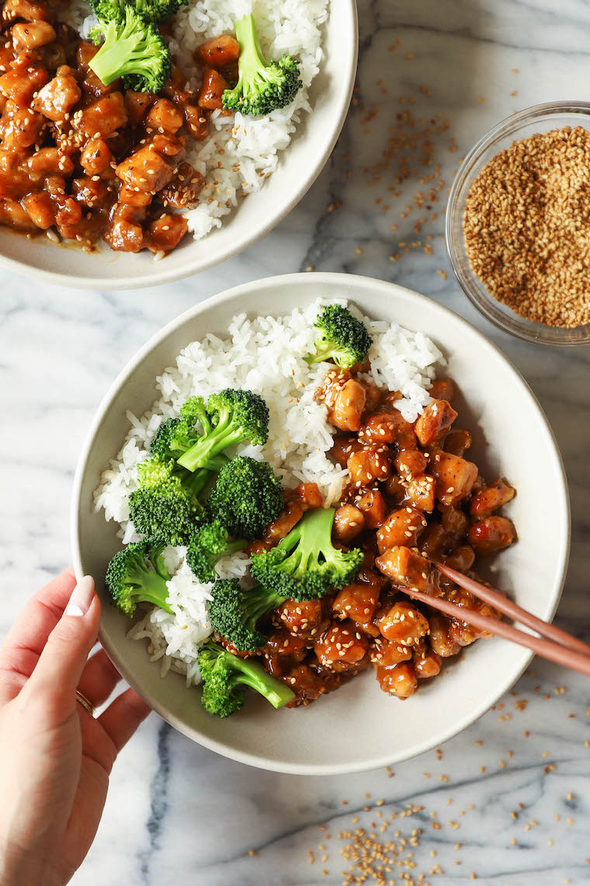

Sesame Chicken Bowls

A classic chinese takeout dish, now at home!
Ingredients:
- 1 cup basmati rice
- 12 ounces broccoli florets, about 2-3 cups
- 1/2 cup chicken stock
- 1/4 cup orange marmalade
- 1/4 cup freshly squeezed orange juice
- 2 1/2 tablespoons reduced sodium soy sauce
- 1 tablespoon rice wine vinegar
- 1 tablespoon freshly grated ginger
- 3 cloves garlic, minced
- 1 teaspoon Sriracha, optional
- 4 1/2 tablespoons corn starch, divided
- 1 1/2 pounds boneless, skinless chicken thighs, cut into bite-size pieces
- Kosher salt and freshly ground black pepper, to taste
- 3 tablespoons canola oil
- 2 teaspoons toasted sesame seeds
- 1 green onion, thinly sliced
Directions:
- In a large saucepan of 1 1/2 cups water, cook rice according to package instructions; set aside.
- Place broccoli florets into a steamer or colander set over a pan of boiling water. Cover and steam for 5 mins, or until cooked through and vibrant green; set aside.
- In a small bowl, whisk together chicken stock, orange marmalade, orange juice, soy sauce, vinegar, ginger, garlic, Sriracha, if using, and 1 tablespoon cornstarch.
- Season chicken with 1/2 teaspoon salt and 1/2 teaspoon pepper; sprinkle with remaining 3 1/2 tablespoons cornstarch until evenly coated.
- Heat canola oil in a large skillet over medium high heat. Working in two batches, add chicken and cook until golden brown, about 6-8 minutes. Stir in chicken stock mixture until thickened, about 2-3 minutes. Stir in sesame seeds.
-
Serve chicken immediately with rice and broccoli, garnished with green onion, if desired.